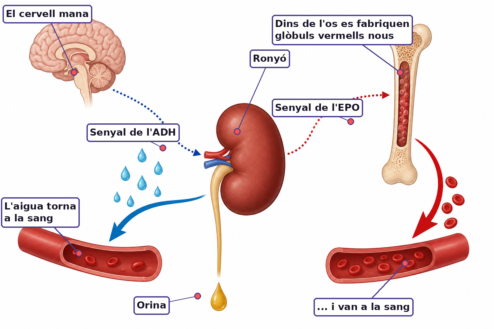

✕
✕
📖 Paraules d'avui كلمات اليوم
⚡
nervi
«cable» que porta senyals elèctrics molt de pressa
🦶
reflex
resposta automàtica i molt ràpida, sense pensar-hi
🩸
hormona
missatger que viatja per la sang
🏭
glàndula
òrgan que fabrica una hormona
🫘
ronyó
الكلية
filtra la sang i fabrica l'orina
🧪
urea
residu que ve de les proteïnes
💧
orina
البول
líquid amb els residus que surt del cos
🚽
bufeta
المثانة
bossa on s'acumula l'orina
Altres paraules: residu = الفضلات
✕
✏️ Copia la paraula en català انسخ الكلمة بالكتالونية
الكلية
البول
nervi
hormona
✕
🔗 Paraules de les sessions 4 i 5: aparella كلمات الدرسين 4 و5: صِل بين الأزواج
حاول أولًا من الذاكرة. اكتب بجانب كل كلمة الحرف الصحيح. ثم تحقّق بالنظر إلى ورقتي الدرسين 4 و5.
ventricle
vàlvula
pols
freqüència cardíaca (FC)
oxigen
A batecs que fa el cor en 1 minut
B cavitat de baix del cor, amb molt múscul
C gas de l'aire que els músculs necessiten
D porta que s'obre només en un sentit
E el batec que notes al canell
La paret més gruixuda és la del ventricle dret / esquerre.
La meva FCmàx: 220 − (la meva edat) = bat/min.
أيّ ventricle جداره أسمك؟ ضع دائرة. ثم احسب أعلى معدل لنبضك: 220 − عمرك.
✕
✕
✏️ Abans de començar · la teva hipòtesi (3 min)
Dibuixa un cos i marca per on creus que surten la urea, les sals i l'aigua que sobren. No es corregeix ara.
ارسم جسمًا وضع علامة على المكان الذي تظن أن urea والأملاح والماء الزائد تخرج منه. لن يُصحَّح هذا الآن.
✕
① T'espantes i el cor s'accelera sol. Qui creus que li dóna l'ordre? el cervell / els pulmons / no ho sé
تفزع فيتسارع قلبك من تلقاء نفسه. من تظن أنه يعطيه الأمر؟ ضع دائرة.
② Alguns dies l'orina és molt clara i d'altres molt fosca. Creus que depèn de: l'aigua que beus / la roba / no ho sé
في بعض الأيام يكون البول فاتحًا جدًا وفي أيام أخرى داكنًا جدًا. على أي شيء تظن أن ذلك يعتمد؟ ضع دائرة.
✕
⏱️ Estació A · Quant triga una ordre a fer el viatge? (en parelles, regle de 30 cm) المحطة A: كم يستغرق الأمر حتى يصل؟
Qui fa de parella subjecta el regle pel 30 i el deixa caure sense avisar. Tu tanques la mà tan de pressa com puguis. Anota en quin número l'has agafat.
يمسك زميلك المسطرة من الرقم 30 ويتركها دون أن ينبّهك. أغلق يدك بأسرع ما يمكن. اكتب الرقم الذي أمسكتها عنده.
| Distància caigudaمسافة السقوط | 5 cm | 10 cm | 15 cm | 20 cm | 25 cm | 30 cm |
|---|
| Temps de reaccióزمن الاستجابة | 101 ms | 143 ms | 175 ms | 202 ms | 226 ms | 247 ms |
حوّل بهذا الجدول السنتيمترات إلى ملّي ثانية. إذا كان عددك بين عددين فاختر الأقرب.
| Mà dominant · cmاليد المسيطرة | Mà dominant · ms | L'altra mà · cmاليد الأخرى | L'altra mà · ms |
|---|
| Prova 1 | | | | |
| Prova 2 | | | | |
| Prova 3 | | | | |
| Prova 4 | | | | |
| Prova 5 | | | | |
La meva mà dominant ha estat més ràpida / més lenta que l'altra.
Totes les proves m'han donat el mateix número: sí / no. Per això en fem 5 / 1.
ضع دائرة: هل كانت اليد المسيطرة أسرع أم أبطأ؟ هل حصلت على الرقم نفسه في كل المحاولات؟ لهذا السبب، كم محاولة نقوم بها؟
✕
🦶 Estació B · L'arc reflex en directe (grups de 5, amb una pilota) المحطة B: طريق reflex
Cada persona fa un paper i es passa la pilota en ordre: receptor (la pell del peu) · nervi que puja · medul·la espinal · nervi que baixa · efector (el múscul que retira el peu).
يؤدي كل شخص دورًا ويمرّر الكرة بالترتيب: المستقبِل (جلد القدم) · nervi الصاعد · الحبل الشوكي · nervi النازل · المستجيب (العضلة التي تسحب القدم).
L'ordre fa aquest camí: (el peu) → nervi que puja → → nervi que baixa → (el múscul).
Banc de paraules
receptormedul·la espinalefectorcervell
Si traiem el «cervell» del grup, el reflex continua funcionant / s'atura.
ضع دائرة: إذا أخرجنا «الدماغ» من المجموعة، هل يستمر reflex في العمل أم يتوقف؟
✕
🃏 Estació C · Targetes: qui fabrica cada hormona i què fa (en parelles) المحطة C: من يصنع كل hormona وماذا يفعل
Encaixa cada hormona amb la seva glàndula, la situació i l'efecte. Copia el resultat aquí. La primera fila ja està feta: és el model.
صِل كل hormona بغدته وبالحالة وبالأثر. انسخ النتيجة هنا. الصف الأول نموذج.
| Hormona | Quina glàndula la fabricaأي glàndula تصنعه | En quina situacióفي أي حالة | Quin efecte téما أثره |
|---|
| Adrenalina | glàndula suprarenal | t'espantes / esprintesحين تفزع / تركض بسرعة | puja la FC, obre els bronquis, frena la digestió |
| Insulina | | | |
| ADH | | | |
| EPO | | | |
Banc de paraules
pàncreeshipòfisi (al cervell)ronyó الكليةacabes de dinar بعد تناول الطعام مباشرةfa calor i no beus الجو حار ولا تشرب ماءًvius a la muntanya, amb poc O₂ تعيش في الجبل، oxigen قليلfa entrar la glucosa a les cèl·lulesmana al ronyó retenir aiguamana fabricar més eritròcits
✕
✕
📖 Per llegir: dues maneres de donar una ordre
⚡ Pels nervis: com un cable elèctric. Va molt de pressa: mil·lisegons. L'ordre arriba i s'acaba de seguida.
🩸 Per les hormones: missatgers que viatgen per la sang. Triguen més (segons o minuts), però l'efecte dura molt.
Quan t'espantes, primer arriba l'ordre pel nervi (el cor s'accelera de cop). Després arriba l'adrenalina per la sang i et manté accelerat una bona estona.
✕
📊 Compara les dues vies قارن بين الطريقين
أكمل الجدول من بنك الكلمات. الخانة الأولى نموذج.
| Via NERVIOSAطريق nervi | Via HORMONALطريق hormona |
|---|
| Per on viatjaمن أين ينتقل | pel nervi (elèctric) | |
| Quant trigaكم يستغرق | | |
| Un exempleمثال | | |
Banc de paraules
per la sang عبر الدمmil·lisegons ملّي ثانيةminuts دقائقretirar el peu d'una xinxeta سحب القدم عند وخز الدبوسl'adrenalina quan t'espantes
Quan t'espantes, el primer que arriba al cor és l'ordre pel nervi / per l'hormona, perquè és més ràpida / més lenta.
Després arriba l'adrenalina per la sang, i fa que el cor es quedi accelerat una bona estona / només un instant.
ضع دائرة: عندما تفزع، أي أمر يصل إلى القلب أولًا، ولماذا؟ ثم كم يبقي adrenalina القلب متسارعًا؟
✕
✕
🔢 Llegenda del dibuix
① sang que ARRIBA, amb residus (els puntets foscos són la urea)
② ronyóالكلية
③ sang que SURT, ja filtrada
④ urèter
⑤ bufetaالمثانة
Al dibuix hi ha un ronyó, però en tens dos, un a cada costat de la columna.
✕
⚠️ Compte: aquí «sang neta» vol dir sense urea, no amb oxigen. Per això al dibuix les dues canonades són vermelles.
✕
📖 Per llegir: de la cèl·lula a l'orina
🧫 Les cèl·lules treballen→🧪 Fan residus (urea)→🩸 Van a la sang→🫘 El ronyó els filtra→💧 Surten amb l'orina
Les cèl·lules, quan treballen, fan residus. El més important és la urea. La urea va a la sang. Si s'acumula, és un verí. El ronyó neteja la sang i fa l'orina. L'orina baixa per l'urèter i s'acumula a la bufeta. Quan la bufeta és plena, vas al lavabo.
✕
✍️ Posa els noms al recorregut (mira els números del dibuix i la llegenda) اكتب الأسماء على الطريق
La sang amb residus entra al , que la filtra. La sang filtrada torna al cos i el que sobra forma l'.
L'orina surt del ronyó per un tub, el , i s'acumula a la .
Banc de paraules
ronyóorinaurèterbufetapulmóuretra
✕
📖 Per llegir: dues portes de sortida
🫁 Els pulmons treuen el CO₂ (un gas). 🫘 El ronyó treu la urea, les sals i l'aigua que sobren (un líquid: l'orina).
✕
Classifica: per quina porta surt cada residu? من أي باب يخرج كل نوع من الفضلات؟
اكتب كل نوع من الفضلات في عموده.
| 🫁 Surt pels PULMONSيخرج من الرئتين | 🫘 Surt pel RONYÓيخرج من الكلية |
|---|
| |
| |
| |
Banc de paraules
CO₂ureasals الأملاحaigua que sobra الماء الزائد
✕
Les hormones missatgeres del ronyóesquema didàctic

✕
🔢 Com llegir el dibuix
Esquerra (ADH): el cervell envia el senyal de l'ADH al ronyó → el ronyó no deixa marxar l'aigua i la torna a la sang → surt poca orina.
Dreta (EPO): el ronyó envia el senyal de l'EPO a l'interior de l'os, la medul·la òssia → allà es fabriquen eritròcits nous → van a la sang.
✕
📖 Per llegir: per quina raó l'orina canvia de color
Quan beus poca aigua, l'ADH mana al ronyó que retingui aigua. Llavors fas poca orina i és més fosca. Quan beus molt, passa el contrari: molta orina i ben clara.
✕
💧 Dos gots d'orina: encercla i completa كأسان من البول: ضع دائرة وأكمل
La Júlia ha begut 2 litres d'aigua. El Pau no ha begut res des del matí i ha jugat a bàsquet.
شربت جوليا لترين من الماء. ولم يشرب باو شيئًا منذ الصباح ولعب كرة السلة.
L'orina fosca i escassa és la de la Júlia / del Pau.
Aquesta persona té molta / poca ADH a la sang, i per això el seu ronyó reté / deixa marxar l'aigua.
ضع دائرة: من بوله داكن وقليل؟ هل ADH في دم هذا الشخص كثير أم قليل؟ هل تحبس كليته الماء أم تتركه يذهب؟
Si el Pau ara beu un litre d'aigua, la seva ADH i la seva orina es tornarà .
Banc de paraules
baixarà سينخفضpujarà سيرتفعmés clara أفتحmés fosca أغمق
✕
🩸 El ronyó i els glòbuls vermells: completa الكلية و eritròcits: أكمل
El ronyó també fabrica una hormona, l', que mana fabricar (glòbuls vermells) dins de l'os.
Per això una persona amb el ronyó malalt pot tenir , encara que mengi prou .
Banc de paraules
EPOADHeritròcitsanèmiaferro الحديد
✕
✕
🔁 El cos s'autoregula: completa el cercle
1r · Bec aigua → 2n · puja l' → 3r · el ronyó aigua → 4t · l'aigua de la sang torna a estar .
Banc de paraules
poca قليلADHreté تحبسbé
Quan l'aigua ja torna a estar bé, el cos deixa de fabricar / fabrica encara més ADH.
عندما يعود الماء إلى حاله الجيد، هل يتوقف الجسم عن صنع ADH أم يصنع المزيد؟ ضع دائرة. حفظ داخل الجسم مستقرًا بهذه الطريقة يسمى «homeòstasi».
✕
🕵️ Tanquem el cas del Marc Fontana, pas a pas أكمل قضية مارك فونتانا
Dues dades de l'analítica del Marc (entre parèntesis, el rang normal): urea 34 mg/dL (15–45) · creatinina 0,9 mg/dL (0,7–1,3).
نتيجتان من تحليل دم مارك. بين القوسين الحدّ الطبيعي.
👁️ OBSERVO أُلاحظ
Els residus que filtra el ronyó (urea i creatinina) al Marc són normals / alts.
🔗 CONNECTO أربط
Un ronyó que no filtra acumularia / no acumularia urea a la sang, i també fabricaria poca / molta EPO.
ضع دائرة: هل urea و creatinina عند مارك طبيعيان أم مرتفعان؟ هل تُراكم الكلية التي لا تصفّي urea في الدم أم لا؟ وهل تصنع EPO قليلًا أم كثيرًا؟
✅ DEDUEIXO أستنتج
El ronyó del Marc està . La seva anèmia ve de la falta de .
Banc de paraules
sa سليمةmalalt مريضةferro الحديدaigua الماء
✕
🔬
Pensa-hi: l'EPO dels ciclistes فكّر: EPO عند راكبي الدراجات
Alguns esportistes fan trampes injectant-se EPO. Encercla: amb més EPO tindrien més glòbuls vermells / menys glòbuls vermells, i així portarien més oxigen / menys oxigen als músculs.
يغش بعض الرياضيين بحقن EPO. ضع دائرة: هل يعطي EPO الكثير eritròcits أكثر أم أقل؟ وهل يصل إلى العضلات oxigen أكثر أم أقل؟
Acaba la frase: «Els donava avantatge perquè amb més oxigen els músculs poden…»
أكمل الجملة بالكتالونية: «كان ذلك يمنحهم أفضلية لأنه مع oxigen أكثر تستطيع العضلات…»
✕
📚 Tasca per a casa: el teu ronyó en acció (1 dia) واجب منزلي: كليتك أثناء العمل (يوم واحد)
Durant un dia, apunta quants gots d'aigua beus i de quin color és la teva orina.
سجّل خلال يوم واحد عدد أكواب الماء التي تشربها ولون بولك.
| Moment del diaوقت اليوم | Gots d'aigua des de l'anteriorأكواب الماء منذ المرة السابقة | Color de l'orina (clara / mitjana / fosca)لون البول (فاتح / متوسط / داكن) |
|---|
| Al llevar-teعند الاستيقاظ | | |
| Migdiaالظهر | | |
| Tardaبعد الظهر | | |
| Abans de dormirقبل النوم | | |
Quina conclusió en treus? Quan beus pocs gots, de quin color és l'orina?
ماذا تستنتج؟ عندما تشرب أكوابًا قليلة، كيف يكون لون البول؟ اكتب بالكتالونية.
⚠️ Porta aquesta fitxa a la Sessió 7, i també les dades de freqüència cardíaca en repòs dels 3 matins.
أحضر هذه الورقة إلى الدرس 7، ومعها أعداد نبضك في حالة الراحة في ثلاثة صباحات.